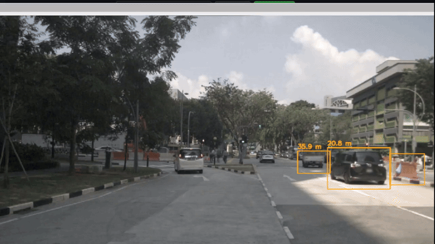

ROS2 pipeline output: YOLO bounding boxes with real-world distance estimates from Camera-LiDAR fusion, tracked across frames on nuScenes data
Built a complete multi-object perception and tracking pipeline in ROS2, integrating YOLO-based 2D detection with camera-LiDAR sensor fusion to localize and track multiple objects in 3D space. Each detected object gets a persistent track ID, a real-world distance estimate, and a velocity vector - all validated against the nuScenes autonomous driving benchmark dataset.
The system runs as five coordinated ROS2 nodes across five terminals, handling the full pipeline from raw sensor data to temporally consistent 3D object tracks visualized in RViz2.
In autonomous navigation, detecting what is around you is only the first step. A robot or vehicle needs to know where each object is in 3D space, how far away it is, and whether it is the same object it saw a moment ago. This requires combining the strengths of camera-based detection (rich visual features) with LiDAR-based depth (precise spatial measurements) - and then maintaining consistent object identities over time despite sensor noise and occlusions.
This project addresses that full perception-to-tracking pipeline, from raw nuScenes sensor streams through detection, fusion, ego-motion compensation, and temporally consistent multi-object tracking.
Node framework, topic pub/sub, RViz2 visualization
2D object detection, COCO-pretrained, GPU/CPU inference
Dataset streaming, calibration transforms, ground truth access
Constant-velocity motion model, 4D state vector [x, y, vx, vy]
Optimal data association via linear sum assignment
Image processing, bounding box overlays, projection utilities
YOLOv8 model inference backend
Python 3.10, simulation-only deployment
The most technically demanding aspect was correctly projecting LiDAR point clouds into the camera frame using nuScenes calibration matrices, while also applying ego-motion compensation to account for vehicle movement between LiDAR sweeps and camera frames. Misaligning these transforms by even a small amount causes 3D centroids to drift significantly in world space.
Tuning the Kalman filter - particularly the process noise and measurement noise variances - required understanding the trade-off between track smoothness and responsiveness to real detections. Too much process noise makes tracks jump; too little makes them lag behind fast-moving objects.
Building and debugging across five simultaneous ROS2 nodes also strengthened system-level thinking: understanding topic timing, message synchronization, and how failures propagate through a multi-node perception pipeline.
Complete ROS2 workspace, setup notes, and pipeline documentation available on GitHub.
View on GitHub